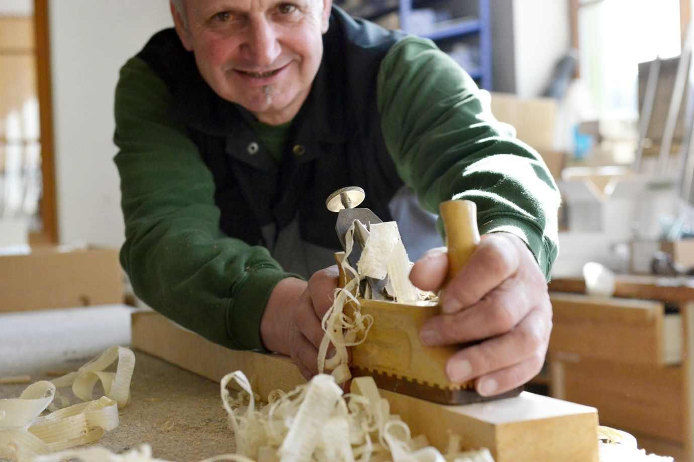
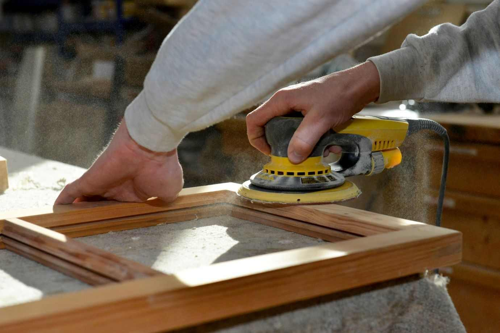
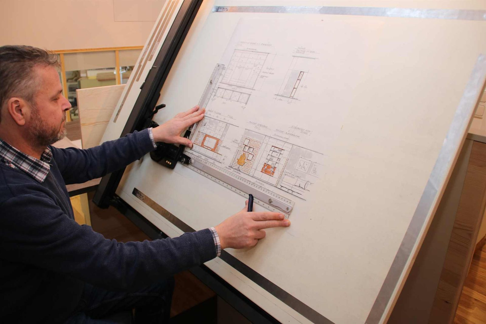
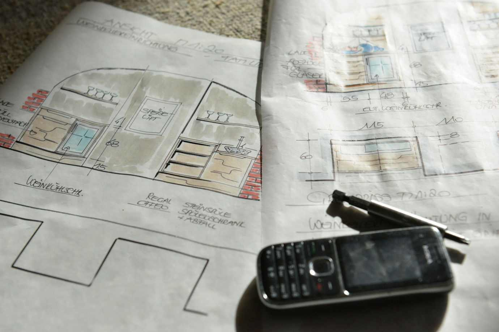
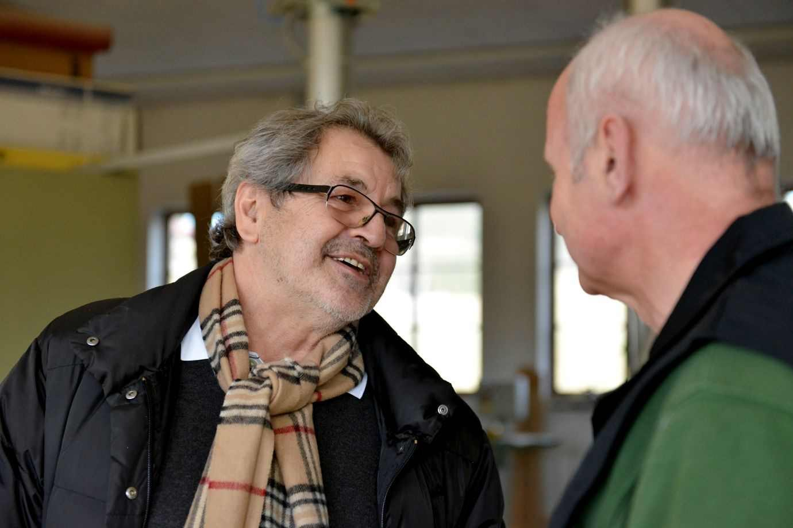
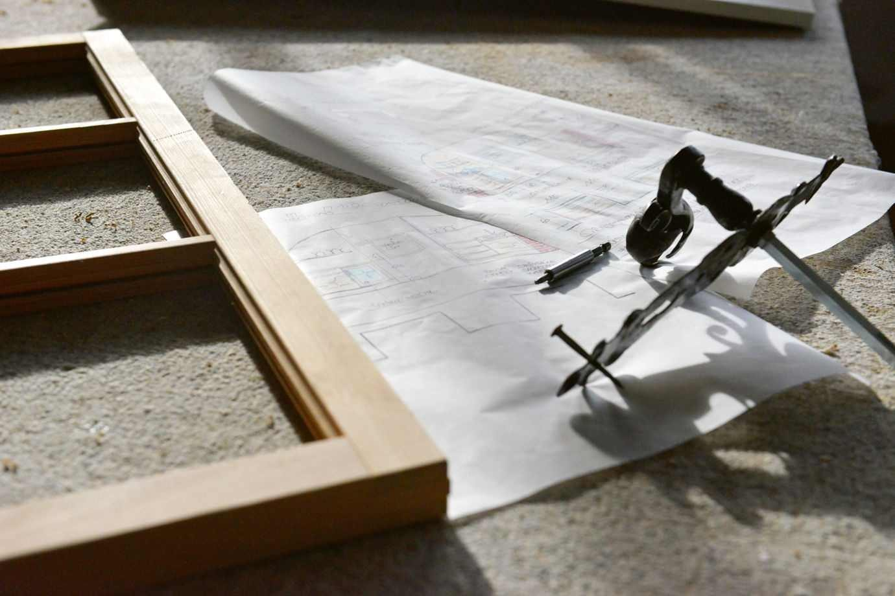
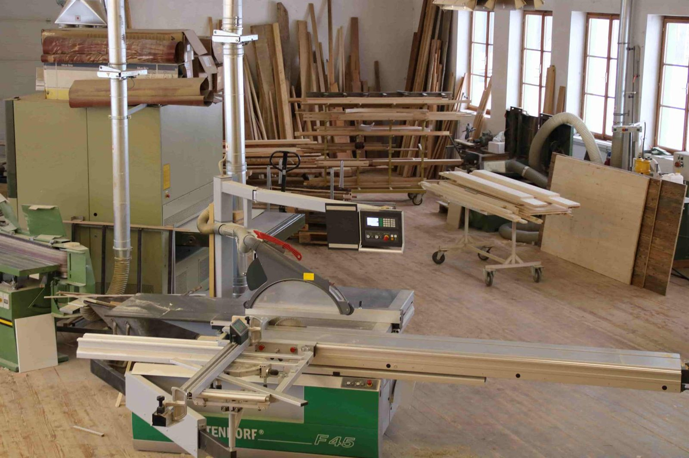
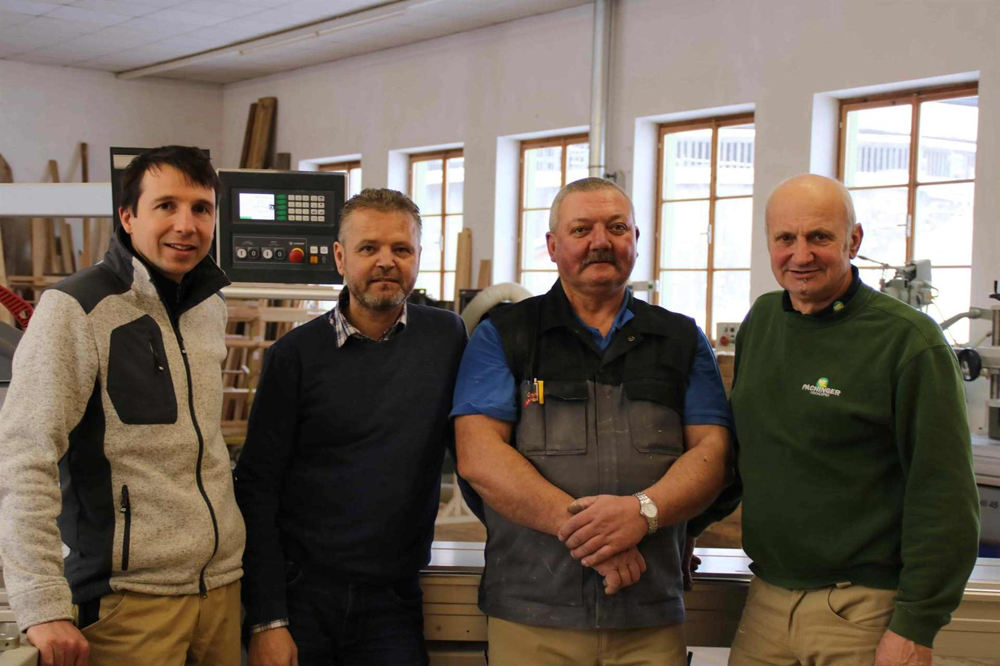

Schloss Riedegg
Der Fußboden wurde aus Altholz angefertigt und die Türen wurden nach Bestand nachgebaut.
Referenzen · Galerie
Ein Auszug aus umgesetzten Projekten in Oberösterreich – sortiert nach Fenster und Türen, Inneneinrichtung und Arbeiten im Außenbereich.
Projekte
Filtern Sie nach Bereich, um passende Arbeiten zu sehen.
Der Fußboden wurde aus Altholz angefertigt und die Türen wurden nach Bestand nachgebaut.
Das Schloss wurde komplett saniert. Sämtliche Fenster wurden restauriert und neu nachgebaut, die Innentüren abgebaut, restauriert und neu aufgebaut.
Referenzprojekt aus dem Bereich Fenster und Türen.
Referenzprojekt aus dem Bereich Fenster und Türen.
Referenzprojekt aus dem Bereich Fenster und Türen – in unmittelbarer Nachbarschaft zur Werkstatt.
Referenzprojekt aus dem Bereich Fenster und Türen.
In unserer Referenzliste im Bereich Fenster und Türen geführt.
Das selbstgeblasene Außenglas der alten Fenster wurde ausgebaut und in die neuen eingekittet. Die Fenster sind Geißfußfenster aus Kieferholz, lackiert mit weißer Pullex-Ölfarbe, die innere Ausführung besteht aus einer Dichtungsebene und Isolierglas. Die Haustür wurde neu aufgebaut und mit einem Motorschloss und einem neuen Rahmen versehen, die Außenansicht blieb erhalten. Eine weitere Ausführung öffnet nach innen, mit innerem Isolierglas und Dichtung, die Oberfläche besteht aus geölter Lärche. Die Haustür kommt mit gefräster Schalung inklusive Motorschloss und Fingerprint, das Garagentor wurde passend zur Haustür gefertigt.
Referenzprojekt im Außenbereich in der Stadt Freistadt.
Das Badezimmer besteht aus Holzdekor und weißen Fronten. Das Umfeld und die Abdeckplatte sind in Eiche beschichtet.
Komplette Inneneinrichtung für ein Wohnhaus in Summerau.
Inneneinrichtung für ein Wohnhaus in Grünbach.
Inneneinrichtung, geführt in unserer Referenzliste als Projekt Summerau Hager.
Galerie
Bilder aus dem Betrieb in Rainbach – dort entstehen die Elemente, die später in den Referenzobjekten sitzen.









„Vom Kundenwunsch bis zur Montage – alles aus einer Hand.“
Dieser Satz steht seit Jahren auf unserer Seite. Er bedeutet: Sie sprechen mit den Leuten, die zeichnen, fertigen und einbauen.
Ob einzelnes Fenster, komplette Fassade oder Einrichtung: Schildern Sie uns Ihr Vorhaben, wir melden uns für ein Aufmaß vor Ort.